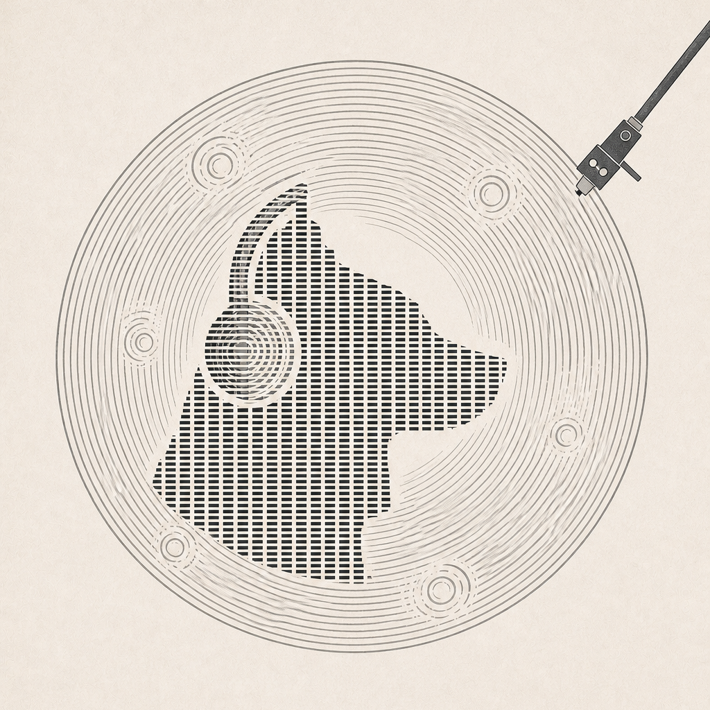
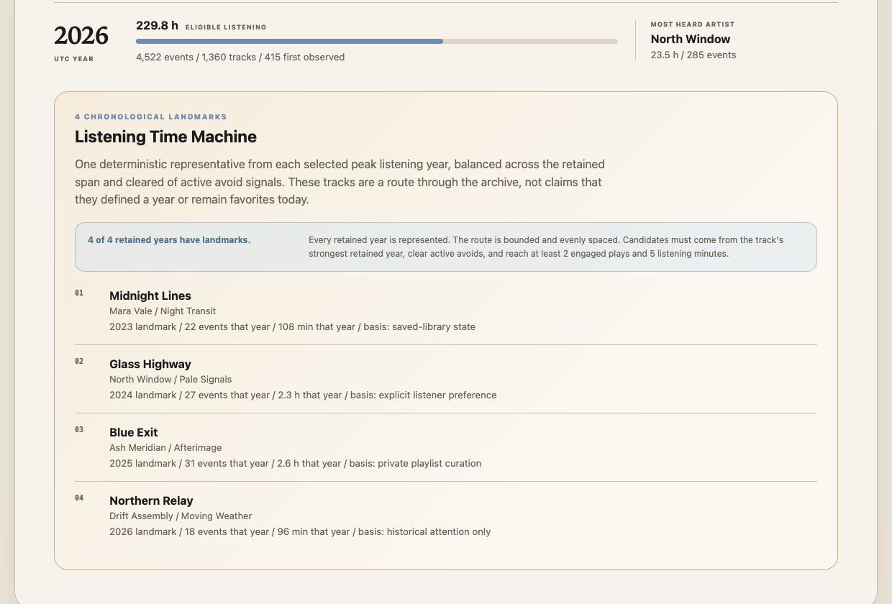
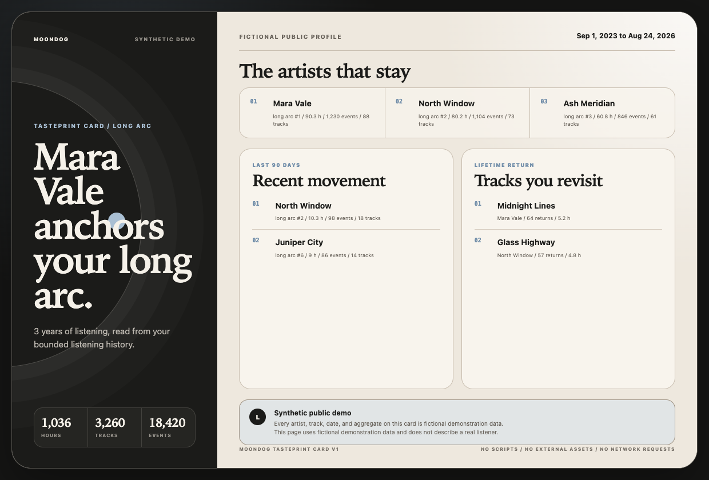

See the long arc
Account Data, Extended Streaming History, and ListenBrainz listens join one provider-neutral identity without exposing raw provider identifiers to the model.

Moondog Personal music intelligenceLocal-first personal AI music agent
Moondog turns years of authorized listening history into an evidence-backed Tasteprint, grounded discovery, and playlist collaboration you can inspect before anything acts.

What exists today
The history is not the product endpoint. Moondog turns private evidence into a profile you can challenge, a route through your listening life, and trusted candidates an agent can plan from.
Account Data, Extended Streaming History, and ListenBrainz listens join one provider-neutral identity without exposing raw provider identifiers to the model.
Familiarity, direct preference, recent movement, skips, and uncertainty stay distinct. Your correction overrides an inference without rewriting what happened.
The agent selects only from host-returned candidates. Playlist order is validated locally, and connected-service effects remain behind explicit authorization.
Artists across eras
Moondog separates artists that keep returning across your retained years from the turnover inside each year's listening-time leaders.
Listening-time top 10
Artists across eras and Top 10 overlap describe this retained fictional archive. They are evidence, not a personality verdict.
Long-gap recurrence
Moondog notices when the same track reappears after a long absence, then gives the agent a bounded listen-again path without turning recurrence into a story about your feelings.
Open the full return evidenceMusic that came back
Each return clears a gap of at least 180 days, the minimum listening-evidence thresholds, and the active avoid boundary. Recurrence is not proof of liking, nostalgia, or intentional absence.
Approximate sessions
Track-stop timestamps become bounded listening stretches when a gap longer than 30 minutes starts a new one.
Multi-track release depth
Mara Vale
North Window
Ash Meridian
The 30-minute grouping is an approximation, and multi-track depth does not claim full-album playback, completion, or preference. All names and counts shown here are fictional.
The question that started it.
You刘森最新的单曲是哪首？
Grounded music-world evidence
A live read-only probe returned four exact-name candidates, then resolved the intended artist from one displayed public artist page before separating released titles from upcoming ones. The CLI can consume that returned page directly, or use an explicitly supplied Spotify history ZIP without a model or persistent import.
moondog catalog \ latest-single \ --artist 刘森 \ --artist-page candidate-page
No model. The returned public page is name-checked before releases load.
Private alternative: use --from spotify-history.zip; the archive and its hints stay local.
music.catalog.artist_searchReturn up to four validated exact-name public artist pages without guessing between them.music.catalog.artist_identityExtract the selected page's public ID, look it up directly, and stop if its artist name differs. The optional local.history.hint path remains host-only.music.catalog.artist_releasesReuse the cached lookup and compute the latest released single before the general list is truncated.host.citeAttach a validated public catalog page, retrieval date, and storefront limitation outside model prose.Runnable proof
Every public visual below uses deterministic fictional data and the same production renderers or grounded capability sequence used by Moondog itself.
Profile summary, evidence explanation, library search, and playlist planning run in order with no model, OAuth credential, personal data, or provider write.

A compact local artifact uses only selected artists, tracks, dates, and aggregates, with an in-frame reminder to review every visible field before sharing.
One grounded loop
The deterministic showcase exposes the exact capability sequence instead of presenting an unexplained playlist as intelligence.
profile.summaryRead the listenerProject a bounded music profile from trusted local evidence.
profile.explainInspect one claimShow which observation or direct signal supports the profile.
library.searchFind trusted optionsRegister only candidates returned by the host for this prompt.
playlist.planValidate the orderBind the exact candidate set, count, and sequence before any action.
Privacy is architecture
Moondog treats personal listening data as local evidence, not content that must be uploaded to make the product useful.
Studio binds to loopback, accepts a file only after a button press, and removes its temporary working copy.
Profile tools omit raw history, source paths, private provider IDs, and correction notes from model-visible context.
Planning is not a write. Spotify playback and playlist effects require the configured authorization and confirmation boundary.
The public tour reads no private store, rejects history imports, and discards every correction when its process stops.
Next: your private history
The static showcase itself needs no dependency installation. Install the locked dependencies once, then open your Spotify history as a Session-only private profile with the complete Tasteprint, Listening Time Machine, continuity map, approximate listening stretches, and multi-track release depth, no persistent import, and no model, provider, cloud, or network request.
npm install --ignore-scripts
npm run studio --
--from spotify-history.zip
Node.js 22.19.0 or newer. Stopping Studio discards the in-memory profile and corrections. Your original ZIP remains unchanged.